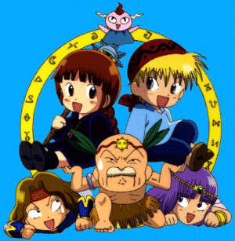

Mahoujin Guru Guru

Table of Contents
|
Series Information
Gameboy Games
|
SNES Games
No information available at this time.
Other Resources
Anime Web Turnpike: Mahoujin Guru Guru Links
(you have to scroll down a bit)
Anime Video Game Resource Center © 1998 by
Luis A. Cruz